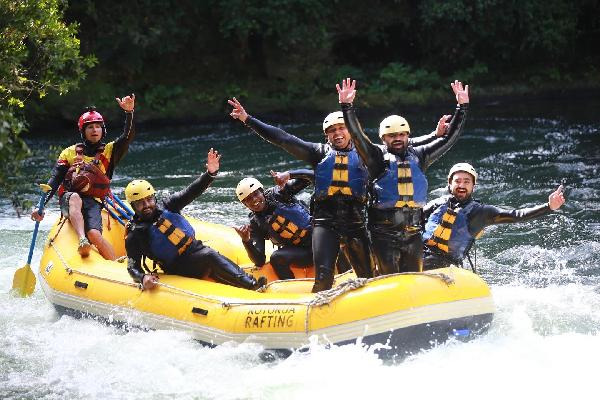
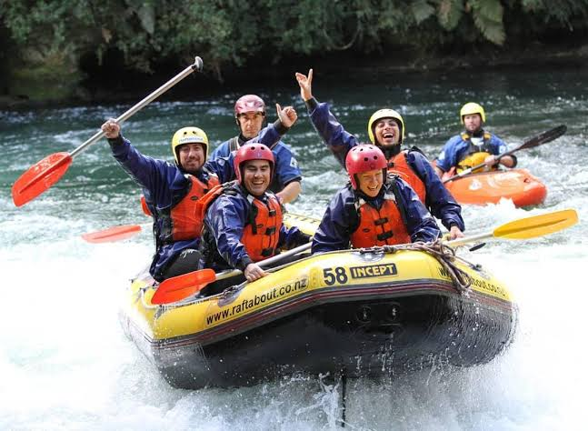
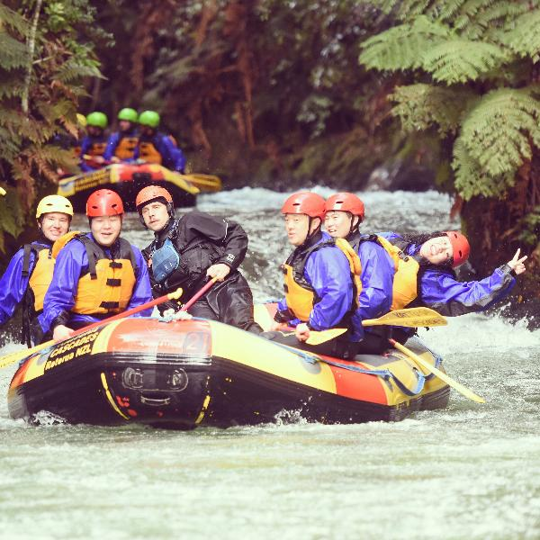
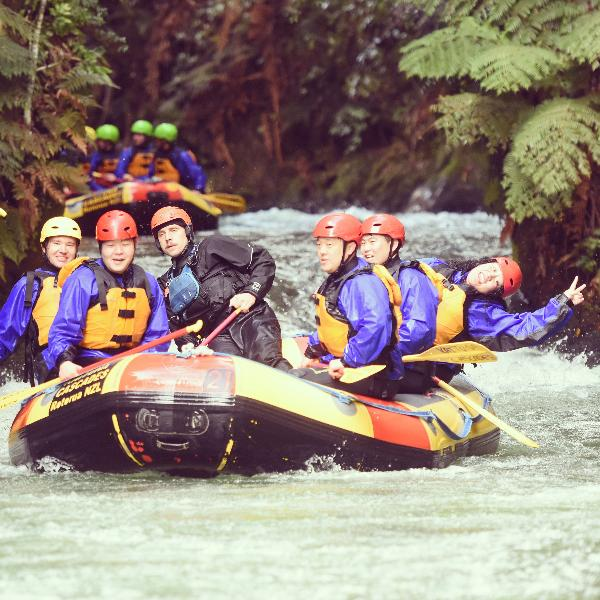
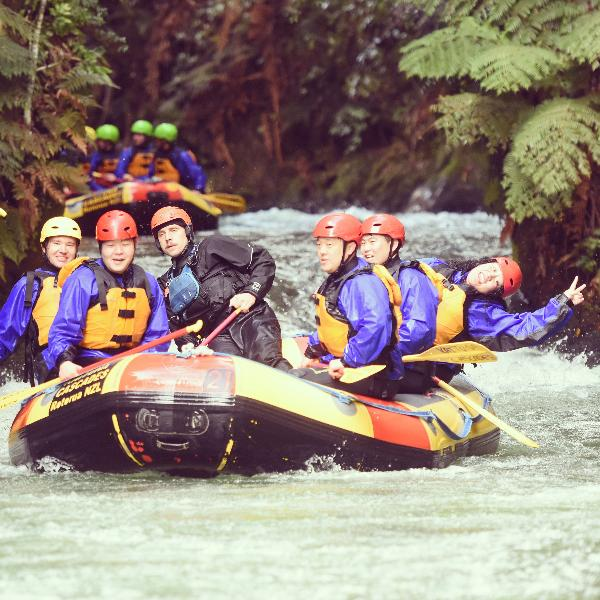

History
Nigeria White Water Rafting, founded in 2025 by Sunday Prince Augustine, brings the thrill of rafting to Nigeria. Combining his passion for adventure with expertise in software, graphic design, and technology, Sunday offers unforgettable rafting experiences and a seamless online booking process.
Adventure Awaits You!


 

